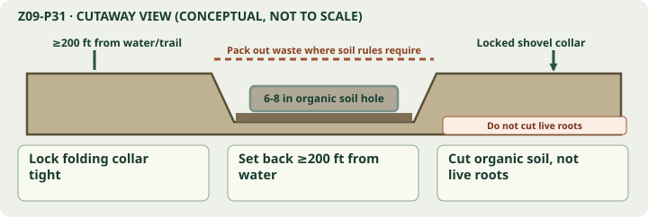

Z09-P31 · Tools and construction · New manuscript
Clear camp ground and dig lawful catholes using compact shovels
Use compact trowels and folding shovels safely for waste burial, fire-ring clearing and snow checks without injuring wrists or roots.
When it applies · Backcountry sanitation catholes (where permitted), authorized fire-ring mineral clearing and camp maintenance.
Equipment · Durable trowel or compact shovel with secure hinge lock, local sanitation rules and work gloves if available.

Actions
- Verify folding-shovel locking collars are completely tightened before digging—a loose folding hinge collapses onto fingers under downward force.[K01, K03, ED]
- Follow agency Leave No Trace sanitation setbacks (typically at least 200 feet from water, trails and camps, 6–8 inches deep in organic soil where catholes are legal, or pack-out where required) without hacking large live tree roots.[K11, E22, E21]
- Use compact shovels strictly for soil, ash or snow work—never pry heavy boulders with thin stamped folding blades that buckle or snap.[K02, K03]
Failure recognition · Digging a cathole right beside a creek bank or leaning body weight onto an unlocked folding shovel hinge.[K01, K11, E22]
Verify · Confirm tight shovel collar, lawful setback from water/trails and clean soil restoration after use.[K01, K11, E22, ED]
Stop or change course · In alpine, desert, snowy or pack-out-required zones where soil decomposition fails, carry waste out in approved bags rather than digging ineffective pits.[K11, E22]
Evidence and editorial notes
- E21 · USDA Forest Service · Know Before You Go: Camping (current web edition)
- Section: Know Before You Go: Camping > Site Selection and Safety · Conditions: Dispersed and developed National Forest camping
Support: Verify site legality, distance from water, wildlife food-storage rules, and weather exposure; leave fragile vegetation undisturbed and avoid digging drainage trenches where prohibited.
Limitations: Dispersed camping rules vary sharply by forest and wilderness designation. · Conflicting evidence: Prohibits legacy trenching practices that damage soils and still fail in heavy runoff.
Editorial note: Replaces obsolete ditch-digging advice with slope/drainage site selection. · Specialist reviewer: Land management and wilderness shelter
Primary source · checked 2026-11-24 - E22 · NPS · Leave No Trace Seven Principles (current web edition)
- Section: Principle 2 > Travel and Camp on Durable Surfaces · Conditions: Campsite selection and shelter setup on public lands
Support: Pitch shelters on established pads, rock, gravel, dry grass, or snow rather than fragile meadows or saturated shorelines; do not alter terrain or cut live vegetation for shelter frames.
Limitations: Deadfall shelter construction is inappropriate in high-use or protected zones except genuine life-safety emergencies. · Conflicting evidence: Restricts destructive improvised shelter building during routine trips.
Editorial note: Separates lawful low-impact practice from emergency improvised cover. · Specialist reviewer: Land management and wilderness ethics
Primary source · checked 2026-11-24 - K01 · OSHA · Hand and Power Tools Safety and Health Topics (current web edition)
- Section: Hand Tools > General Safety Rules · Conditions: Use of knives, saws, axes, hammers and hand tools
Support: Keep hand tools in good condition, use the right tool for the job, examine each tool for damage before use, operate according to instructions and wear appropriate personal protective equipment.
Limitations: General occupational rules do not replace task-specific forestry or field-tool training. · Conflicting evidence: None; baseline tool safety framework.
Editorial note: Anchors tool selection, pre-use inspection and operating boundary cards in Z09. · Specialist reviewer: Tool safety and occupational safety
Primary source · checked 2026-11-24 - K02 · OSHA · Hand and Power Tools (OSHA 3080) (agency PDF)
- Section: Hand Tools > Knives, Chisels, Impact and Wrenches · Conditions: Manual cutting, striking and prying operations
Support: Direct cutting blades away from the body and bystanders, never use cracked wooden handles or mushroomed striking heads, and do not substitute wrenches or blades as pry bars.
Limitations: Does not specify material tensile ratings for improvised handles. · Conflicting evidence: None; directly informs safe cutting and impact-tool failure cards.
Editorial note: Prevents blade slip, splintered-handle and spalling-metal injuries. · Specialist reviewer: Tool safety and wilderness medicine
Primary source · checked 2026-11-24
Current assessment · A04-K02 (2026-11-25) · Open: support partial or missing (A04): Supports misuse and defective equipment limits in occupational work. Exact cutting lane and equipment guidance varies by tool kept under specialist review. Limits: Specialist review PENDING (Tool safety and wilderness medicine); publication HOLD. All release decisions pending. - K03 · USDA Forest Service · Handtools for Trail Work (0523-2810-MTDC) (agency handbook)
- Section: Tool Selection, Inspection and Safe Transport · Conditions: Trail and campsite hand tools (axes, saws, shovels, pulaskis, wedges)
Support: Inspect handles for splits, loose heads and secure wedges before every use; sheath sharp edges during carry and maintain a clear work circle around swinging tools.
Limitations: Forestry guidelines apply to maintained commercial tools; improvised stone or salvaged blades carry higher failure risk. · Conflicting evidence: None; aligns with OSHA-3080.
Editorial note: Grounds woodworking, swinging-tool clearance, carrying and maintenance cards. · Specialist reviewer: Forestry tool safety and trail maintenance
Primary source · checked 2026-11-24 - K11 · NPS · Leave No Trace Seven Principles (current web edition)
- Section: Principle 2 and 5 > Low-Impact Construction and Material Use · Conditions: Temporary camp craft and emergency construction on public lands
Support: Avoid cutting live saplings, nailing into live trees or building permanent structures on public lands; dismantle temporary non-destructive lashings and leave natural features intact.
Limitations: Life-safety emergencies differ from routine camp practice but still require hazard-free builds. · Conflicting evidence: Restricts destructive bushcraft construction in routine recreation.
Editorial note: Distinguishes lawful low-impact knots/lashings from destructive camp building. · Specialist reviewer: Land management and wilderness ethics
Primary source · checked 2026-11-24
Source lineage · NPS Leave No Trace and USFS handtools; new manuscript · Classification · New manuscript.